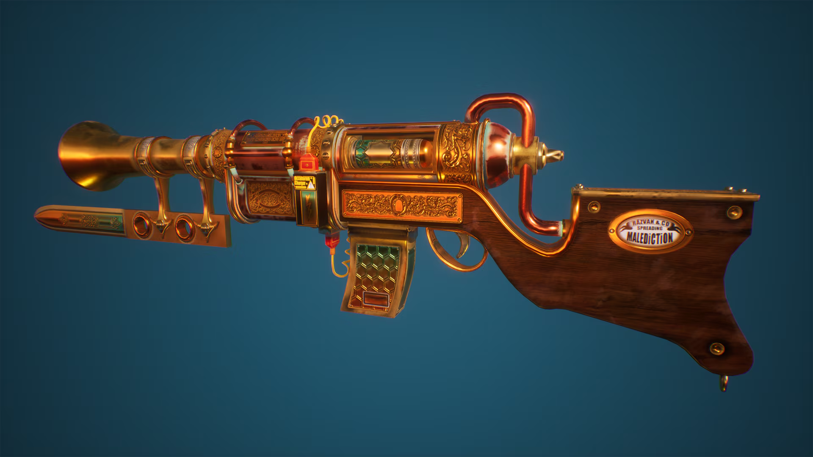
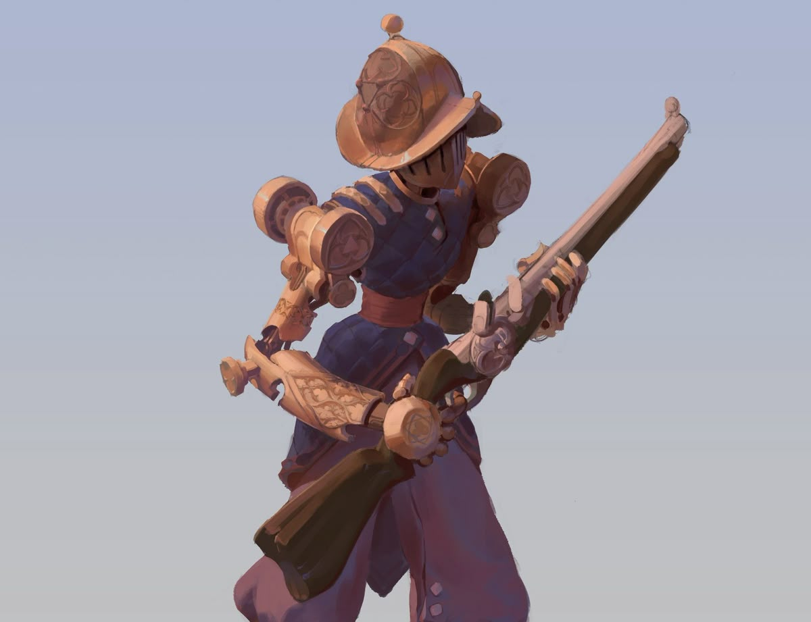

Combate mecânico
Todos os personagens do jogo são robos dos mais variados tipos, desde robos simples até monstruosos golens mecanicos
Grupo ALC apresenta
Steam Madness é um jogo de ação em primeira pessoa ambientado em um universo steampunk cartunesco, no qual máquinas, fábricas e invenções improvisadas transformam cada combate em um experimento perigoso.
Apresentação do jogo
Brasshaven é uma megalópole movida por vapor, apesar de ser o simbolo do progresso e da criatividade, ela é constantemente atacada por criminosos e vilões, cabe a destemida guarda mecanica a função de imperdir que eles destruam o glorioso brilho dourado dessa incrivel cidade.
Em Steam Madness você estará controlando um robo antes projetado para trabalhos simples, chamado Tin-Man, apesar de sua função inicial Tin-Man sempre quis ser um robo da Guarda Mecanica, e finalmente esse dia chegou, porem isso significa só o começo. Agora Tin-Man vai precisar passar pelos vários níveis da estação de treinamento, para provar que ele conseguirá cumprir seu dever independente de suas armas e situações
Todos os personagens do jogo são robos dos mais variados tipos, desde robos simples até monstruosos golens mecanicos
Cada fase simula um cenário diferente que um guarda mecanico, pode passar em operação, eles são extremamente variados, desde as armas aos locais
Tanto as armas, os inimigos e os cenarios são completamente fora do padrão. O foco do jogo é principalmente a criatividade dos locais mostrando varias situações diversas e fantasiosas

Personagens
Conceitos visuais da própria equipe, apresentados em cards responsivos.

Protagonista
Ai esta ele, o garoto prodigio, um robo com um pouco mais de 1,70 que todos dúvidaram, agora está ai, vestindo a farda de recruta e cheio de vontade para mostrar para todos que eles estão errados.

Auxiliar e Instrutor
Olha se não é o robo mais lindo dessa cidade. Bem, depois de eu te ver 10 vezes seguidas na frente do quartel de recrutamento, eu pensei "bom, ou esse robô está com defeito ou ele realmente é esforçado" e como um passo de magica e tambem porque eu sou o maior patrocinador das forças armadas, você está aqui, agora, para você e eu não fazermos papel de bobo eu vou te instruir nas provas. Se sinta honrado garoto!
O cenário
Para proteger a grande cidade dourada, Tin-Man esta aqui, nas grandes instalações de testes da Guarda-Mecanica, apesar de ser fechada e completamente protegida, os cenarios montados nessas enormes instalações são praticamente um recorte de uma missão real que nossos agentes enfrentam.
Dentro dessa instalações industriais, Tin-Man verá de tudo e vivenciará tudo, para assim em uma situação real ele não virar sucata.
Carrossel de imagens
O carrossel abaixo usa apenas materiais do projeto já produzidos pela equipe.
Integrantes do grupo
Desenvolimento do site / interfaçe visual / Game Design
Programação / modelagem de ambientes / modelagem de objetos
Produção de Sons / Modelagem de Personagens / Roteiro